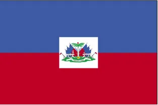
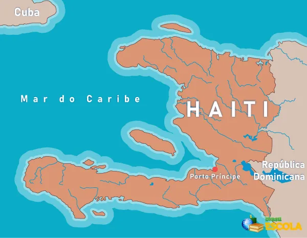
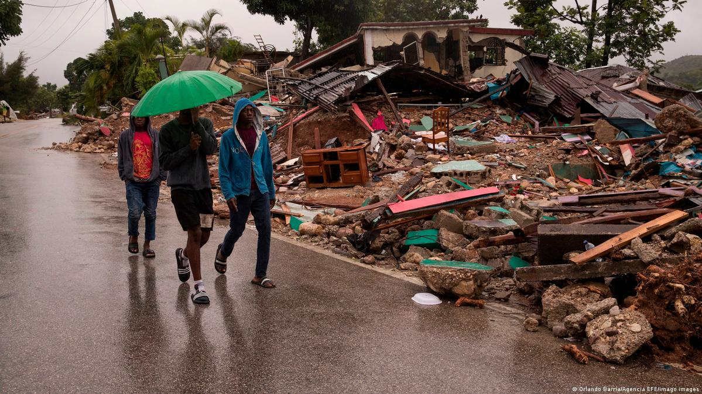

Haiti
Introdução

Localização: América Central.
área: 27.750 km².
Capital: Porto Príncipe.
Idioma: Francês e crioulo (oficiais).
População: 10.032.619 habitantes.
Densidade demográfica: 361,5 hab/km².
Esperança de vida ao nascer: 60 anos.
índice de Desenvolvimento Humano (IDH): 0,404.
Moeda: Gourde.
Produto Interno Bruto (PIB): US$ 7 bilhões.

Conflitos
Os primeiros conflitos começam a aparecer logo com a colonização do país por Cristóvão Colombo, com repressão aos seus povos nativos, que viviam na ilha conhecida como Quisqueya pelos índios aruaques há mais de 7000 anos. Em 5 de dezembro de 1492, Cristóvão Colombo chegou a uma grande ilha, à qual deu o nome de Hispaniola. Mais tarde passou a ser chamada de São Domingos pelos franceses.
No período da colonização Inicialmente uma próspera colônia francesa, chamada de São Domingos, o Haiti fornecia açúcar de forma mais competitiva do que Cuba e o nordeste brasileiro. O produto era valiosíssimo no comércio internacional. Cerca de ⅔ da população era escrava.

Desastres ambientais
Devido à sua localização geográfica, o Haiti é muito vulnerável a alguns eventos naturais destrutivos, como terremotos, tempestades tropicais, deslizamentos de terra e inundações. Historicamente, esses eventos comprometem as infraestruturas (estradas, habitações, pontes, escolas, edifícios públicos, centros de saúde, entre outros) e causam muita perda de vidas humanas no país. No entanto, alguns furacões, em particular os que ficaram conhecidos como Gustav e Hanna, constituíram, em termos de danos, o quarto maior desastre que atingiu o Haiti desde o início do século XX. De acordo com Reliefweb (2008), diversas tempestades tropicais afetaram o território haitiano: Fay (15 de agosto de 2008), Gustav (26 de agosto de 2008), Hurricane Hanna (6 de setembro de 2008) e Ike (8 de setembro de 2008). Mais de 328 pessoas morreram e 101.810 famílias foram afetadas devido a essas tempestades, incluindo 125 em Gonaïves/Artibonite. (Reliefweb, 2008). Além desses eventos climáticos, houve o devastador terremoto de 12 de janeiro de 2010, que causou a morte de 300.000 pessoas e destruiu muitas infraestruturas do país.
Revolução Haitiana (1791–1804)
A Revolução Haitiana foi uma grande rebelião de escravos e negros libertos que aconteceu na colônia francesa de São Domingos a partir de 1791. Essa rebelião conduziu a colônia francesa de São Domingos à independência e foi motivada pela grande exploração e violência do sistema colonial escravista francês naquela região.
Os escravos e os negros libertos da região foram fortemente influenciados pelos acontecimentos que se passavam durante a Revolução Francesa. Os ideais de igualdade entre os homens inspirou-os a lutar pela sua liberdade e por seus direitos. Os escravos lutavam pelo fim do sistema escravista, e os negros libertos lutavam pela equiparação dos direitos entre brancos e negros.
Com a rebelião, os escravos passaram a organizar-se e a lutar contra as tropas francesas que estavam instaladas na região. A força do movimento em São Domingos e os desdobramentos da Revolução Francesa resultaram na abolição da escravidão em todas as colônias francesas, incluindo São Domingos em 1794.
No decorrer dos acontecimentos no Haiti, todo o ódio que havia sido represado durante anos pelos escravos e negros libertos levou os escravos a cometerem atos de violência contra franceses. Foram comuns nesse período ataques de escravos e negros libertos contra propriedades de franceses, em que os donos e sua família eram mortos. Durante esse período de lutas, os haitianos foram liderados por Toussaint Louverture. Com a prisão e morte de Toussaint Louverture, a liderança da Revolução Haitiana foi ocupada por Jean-Jacques Dessalines, que reiniciou a luta contra os franceses e derrotou-os de maneira definitiva em novembro de 1803. Pouco tempo depois, em 1º de janeiro de 1804, foi declarada a independência de São Domingos.
Após a declaração de independência, Jean-Jacques Dessalines escolheu o nome de Haiti para o novo país que havia surgido. O nome foi escolhido em homenagem às populações indígenas que habitavam a região antes da chegada dos europeus. O governo do Haiti foi ocupado pelo próprio Dessalines. Após a independência, o Haiti tornou-se o único país das Américas que conquistou sua independência a partir de uma rebelião de escravos.
A independência teve seu preço, que está na raiz dos problemas haitianos. A França, em troca da independência, cobrou uma indenização equivalente ao seu orçamento anual. Os Estados Unidos e o Vaticano apoiaram sanções ao país – algo semelhante ao que se faz com Cuba hoje (sem o apoio do Vaticano e da maior parte dos países-membros da ONU).
Ocupação dos EUA com interesses econômicos
No século 20, entre 1915 e 1934, o Haiti foi ocupado pelos Estados Unidos – que exercia influência ainda maior nos países caribenhos. Foram os americanos que instituíram o francês como idioma oficial no lugar da língua dos negros, o criollo – e governaram apoiados em uma minoria mulata, colocando os cidadãos negros em segundo plano. O país também interviu em diversos setores, como a polícia, fortalecendo a repressão. Estima-se que 15 mil haitianos tenham sido mortos em ações policiais no período. é bom lembrar que os Estados Unidos e a França foram aliados na perseguição ao país no século XIX e o idioma francês, assim, foi o meio de separar os cidadãos e reprimir a cultura de matriz africana.
Ditadura de 1957
Em 1957, tem início uma nova fase do país com a eleição do médico François Duvalier, o Papa Doc. O governo logo converteu-se em um regime ditatorial de caráter totalitário, que se valeu do orgulho negro para legitimar seu poder, fortalecido pelo apoio dos Estados Unidos, receoso da influência cubana na região após a Revolução de 1959. Com a morte de Papa Doc, em 1971, nasce seu filho de 19 anos, Jean-Claude Duvalier, o Baby Doc. Seu governo, que deu continuidade à ditadura, abriu espaço para as chamadas “maquiladoras”, ou seja, indústrias montadoras. Derrubado em 1986, exilou-se na França, num levante democrático e popular.
Após um período de transição, o ex-padre Jean-Bertrand Aristide, figura popular do campo da esquerda, é eleito em 1990 e derrubado meses depois. Volta ao poder em 1994, com apoio internacional, e fez seu sucessor, René Preval. Voltaria ao poder em 2000, mas renunciaria em 2004, ante os conflitos populares.
Problemas recentes
Apesar de não haver guerras reais no Haiti nos últimos anos, o país passa por conflitos internos, como corrupção e fraudes eleitorais da era Aristide (ex-presidente do país). Um dos presidentes mais recentes, Jovenal Moïses, eleito presidente em 2016 e referendado em 2017, foi torturado e morto em 7 de julho de 2021 em sua casa em Porto Príncipe. Seu governo foi marcado por crise econômica, protestos por sua renúncia e pelo endurecimento do regime, com a dissolução do Parlamento e a concentração do poder em suas mãos.
O país é governado desde 20 de julho por Ariel Henry, escolhido indiretamente como primeiro-ministro. O novo governante disse que o momento era de “união e estabilidade”, frente ao acirramento dos conflitos.